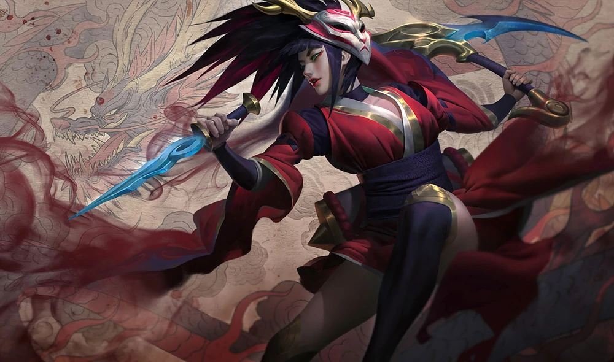
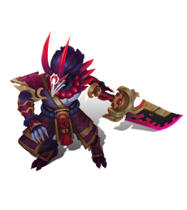

-
Blood Moon
Blood Moon is a series of alternate future/universe skins in League of Legends. Set in the mythos of Ionia, it features champions as Ionian demons or cult worshipers of the Blood Moon.



Blood Moon Aatrox
Ancient manuscripts tracking the orbit of the Blood Moon describe it not as celestial phenomenon, but as a cosmic womb. As the seasons grow shorter and the cult's activity continues to increase, some worry it will give birth to a new kind of demon - a creature helping to bring about its own dark ascendance.Blood Moon Akali
Priestesses of the Blood Moon walk their own path, traveling far fromthe cult to pursue the whispers of their demons. A meditative figure living deep inthe snow-dusted wood, Akali was the first woman to embrace her inner darkness, and speak directly with the Blood Moon itself.
Blood Moon Diana
A child chosen by the Blood Moon itself, Diana's mind has been opened to the lost ways of the cult—unknown to its leaders, and even the slavering demons beyond. Hers is a truth no one can know, and a fated metamorphosis beyond men and the gods.
Blood Moon Elise
A revered priestess of the Blood Moon cult, Elise has so wholly intertwined her body with her demon spirit that they are now a single entity. She has traveled beyond all known civilization, existing in the apocryphal darkness hanging beyond the precipice of the world.Blood Moon Evelynn
A seductive demon summoned on the night of the Blood Moon, Evelynn moves between isolated villages, wooing the residents until they fall deeply in love with her. One by one these poor souls will surely perish, their hearts torn from their still-living bodies.Blood Moon Jhin
Ink-mage, trained assassin, master of ceremonies: Jhin is all this and more, a grandiose figure whose encyclopedic knowledge of centuries-old rituals fuels the Blood Moon's hellish summoning rites. He knows the name of every demon, and how to direct them into a still-living vessel.
Blood Moon Kalista
A demon of vengeance summoned on the night of the Blood Moon, Kalista's singular obsession with 'betrayers' knows no limits—any deception, no matter how trivial, will be met with death. Her victims are left hanging from the walls of their homes, a warning to those who remain.
Blood Moon Katarina
An honored priestess of the Blood Moon cult, merged with the flesh of her demon as all priestesses are fated to be. Yet the descent of the Blood Moon has changed the nature of demons and humankind, and Katarina has begun her ascent into a newer, darker form.
Blood Moon Kennen
A kingslaying demon summoned on the night of the Blood Moon, Kennen's purpose is to depose those in power and eliminate every member of their line. He is ruthless in this task, tearing across heavily armed fortress cities in the blink of an eye.
Blood Moon Master Yi
The cultists of the Blood Moon have begun a dread metamorphosis, as the boundary between the demon realm and the human world is rapidly erased. Yi is among those first blessed by this new darkness, the demon within his blade arm driving him to ever greater spectacles of violence.
Blood Moon Pyke
A demonic spearfisher lurking within the darkness of the Blood Moon's mirror dimension, Pyke casts his hooked blade across an endless, liquid night, dragging demons up from the bottom of the world and into their human hosts. Inexorably tied to the Blood Moon, Pyke's sudden appearance in Ionia is a dire omen indeed…
Blood Moon Shen
Priestesses of the Blood Moon walk their own path, traveling far from the cult to pursue the whispers of their demons. A meditative figure living deep in the snow-dusted wood, Akali was the first woman to embrace her inner darkness, and speak directly with the Blood Moon itself.Blood Moon Sivir
A newly anointed priestess of the Blood Moon cult, Sivir wields a weapon that is both a killing tool and a key to the hellish mirror world where all demons are born. Slowly but surely, it has merged her twinned selves, and now it is no longer clear where the human ends and the monster begins.
Blood Moon Talon
An anarchic demon summoned on the night of the Blood Moon, Talon was once a human assassin who surrendered his flesh during one of the cult's possession rituals. He now kills indiscriminately, relishing the terror in his victim's dying eyes.Blood Moon Thresh
A demon summoned on the night of the Blood Moon, Thresh's insatiable urge to torture and kill is fueled by thousands of vengeful spirits drawn to his lantern. Entire villages are left slaughtered in his wake, their blood staining the land for decades.
Blood Moon Tryndamere
The demon Tryndamere has fully assumed control over his twinned human body, using its inhuman strength to slash gaping wounds in the veil between the human and demonic realms. Shrugging off wounds considered fatal even to other demons, his is an unstoppable, unquenchable rage that would see all things consumed by the Blood Moon.
Blood Moon Twisted Fate
The Blood Moon cult's true leader is shrouded in whispers and hearsay. It is he who first passed the trial of the masks, and he who unraveled the secrets of surrendering one's flesh to the demon spirits. Whether he is still human, none can say—but he is ever present, and always watching.Blood Moon Yasuo
Ceremonial executioner of the Blood Moon cult, Yasuo's blade is inhabited by an insidious, bloodthirsty demon whose hunger for death can never be satisfied. This suits Yasuo well, for he is possessed of an inner darkness even deeper than the creature whispering at his side.Blood Moon Zilean
Manipulating the lunar cycle by fueling his temporal magic with human blood, Zilean is the face of the Blood Moon cult, and a hellish warlock of unimaginable power. His mind exists across the flow of time, communing with legions of demons from the past, present, and future. -